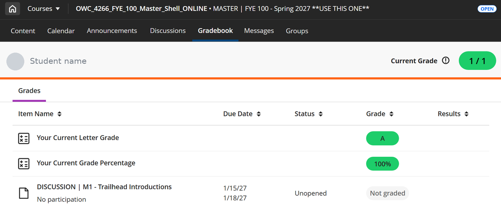

Grading and Late Work
How FYE 100 grades, the rubrics, AI Chats, catch-up dates, and IP grades.
FYE 100 grades the evidence of a habit or skill, not the polish of the work around it, and gives students a posted way to recover from falling behind.
This part explains how the course grades, how to use the rubrics consistently, and what to do when a student falls behind. The rubrics, point values, and dates live in Blackboard. This part is the coaching that goes with them.
Why FYE 100 grades the way it does
FYE 100 is where students practice being college students: planning ahead, asking for help, following through, and recovering when a plan falls apart. Most will make their first college mistake somewhere. This course is the best place for it, because here the mistake costs little and the recovery teaches a lot.
That makes FYE 100 different from a course like ENG 101, where polish, mechanics, and precision are part of what's assessed. Here we assess whether a student can show a habit or a skill in their own life. Grade the evidence of that, not the quality of the writing around it.
Think of your role as an instructor who coaches. You set clear expectations, assess the work, and help the student see a next step. The student decides what they can commit to and follows through. A coaching question can be as simple as "What's one assignment you can finish this week, and when will you work on it?"
What every section shares, and what's up to you
Every section uses the same grading criteria and offers the same minimum recovery opportunities, so students earn the same grade for the same work no matter whose section they're in:
- The same grading criteria: the rubrics for Mile Markers and STAR(T) Stories, and what earns credit (below).
- The same minimum recovery: the catch-up windows for late work. You can offer more than the windows, never less.
- The same outreach: when a student falls behind, you reach out first, and you bring in Student Success through Starfish when the student needs more than the course can give. See Reaching Out.
Everything else is your call: how you give feedback, how you run class, what you accept outside the window, and what extra flexibility you offer a student with a plan. Your experience and judgment are part of what makes the course work.
What earns credit
Start with the assignment criteria and look for what the student actually shows you. They may tell a story out of order, or use an example from home that seems ordinary at first. If the evidence is there, count it.
- Full credit: the work shows what the assignment asks for. A short, specific response can do that.
- Partial credit: some of the learning is there, and a required piece is missing or too general. Give credit for what's there and name the piece to work on.
- No credit: nothing was submitted, or nothing in it relates to the task. If the work is still open, tell the student what they can do next.
We don't deduct for grammar, spelling, length, or formatting unless the assignment asks for them. A student who answers every prompt honestly in plain language has done the work.
Example. A STAR(T) Story describes stepping in as center during a tied game and helping the team win, then ends with "It's important to adapt." Situation, Task, Action, and Result are there; the Transfer doesn't name where the skill comes next. That story earns credit for four of the five steps. A coaching response: "You knew the playbook cold, and it paid off when the team needed you. Where off the field might someone need you to step in like that, and how will you be ready?"
Grading Mile Markers
Each Mile Marker has a rubric in Blackboard matched to its number of prompts, and the rubric lists exactly how many answers earn each score. Use it as the count. An answer counts when it responds to the prompt and is about the student, with at least one real detail from their own life, results, or work. It doesn't have to be insightful, polished, or long. How deep an answer goes belongs in your feedback, not the score.
When you grade
- Use the "A strong answer" note as the standard. Each prompt's note says what specific looks like for that prompt. Grade to the note, not to your own idea of a strong answer.
- Don't deduct for length, grammar or spelling, writing style, a simple example, an honest answer the prompt allows (such as "I didn't use AI this week"), or a conclusion you'd disagree with.
- Between two levels, choose the higher one.
- Name the prompt for anything that didn't count. For example: "Prompt 2: this could apply to anyone. What's one action that fits your week?" If you can't point to a prompt, the credit stays.
Coaching to the scale early
- In the first few Mile Markers, leave a one-line comment on full-credit work too, naming what made it specific. Students learn the scale faster from what earned credit than from what didn't.
- Point students to How Mile Markers are scored in How to Use This Book. It explains full credit in student language, with a short example of general versus specific.
- If your section's scores run noticeably higher or lower than others, compare a few submissions with another instructor. A short norming conversation closes most gaps.
Revise and resubmit
- Every Mile Marker allows two attempts, and the higher score counts. A second try can only help, so students aren't discouraged from revising. Whether to invite a revision is your call.
- Consider offering it, especially early in the semester. A student who rewrites a general answer into a specific one has learned the scale.
- If you invite a revision, name the prompt to revise and what would make it specific. Then grade the new attempt.
- If a student resubmits on their own, grade the new attempt. Blackboard counts the highest graded attempt, so the first grade stays until you grade the new one, and a lower second score never replaces it.
Scoring STAR(T) Stories
Each of the three stories is scored the same way, whether it's recorded or written: credit for each STAR(T) step the student completes. A step counts when it's there and it's about the student. The rubric is attached to each submission portal in Blackboard.
| Step | It counts when it... |
|---|---|
| Situation | Sets the scene: where, when, and what was going on. |
| Task | Says what the student needed to do or solve. |
| Action | Says what the student did, not only what "we" did. |
| Result | Says what happened because of what they did. |
| Transfer | Names where they'll use this skill next. |
Students don't have to label the steps or tell them in order. Give credit for each step the story shows, wherever it shows up. A story that skips a step still earns credit for the steps it has, and a story written as one essay counts the same way. A response earns no credit only when it isn't a true story about the student, such as a general essay about why the skill matters. Recorded stories are never scored on delivery, only on the story and its steps.
The fillable forms make grading easier for you, too. Each form gives every step its own box, so you can see at a glance which steps are there. Coaching students to use the forms early saves you from hunting for a Result in the middle of a paragraph later.
Transfer is the step most often missed. "This will help me in my future career" doesn't name a place. The fillable forms and the practice guides break Transfer into three prompts: what the story showed, where the student will need the skill next, and what they'll do when they get there. Point students to those prompts in your feedback.
Scoring AI Chats
Each AI Chat is scored the same way: half for finishing the conversation, half for the reflection. Each chat's instructions name what "finished" means, such as an observation for every SIFT move and a verdict in Module 4, or a response for each C and a next step in Module 9. Either it's in the transcript or it isn't.
- Grade the reflection like any other response. It counts when it's specific and about the student. "It was helpful and made me think" doesn't. Length isn't scored.
- The chats are course communication. Students are told you read every conversation, and the same community standards apply as in email and discussions. Don't deduct for language. If a student's language is aimed at Coach Pathfinder, send a private note and treat it as a professionalism conversation. If cursing or arguing took the place of the conversation, the "finish" half isn't earned, the same as any unfinished chat.
- Each chat allows two attempts, and the higher score counts, the same as the Mile Markers. Whether to invite a second try is your call.
- Any student who would rather not use AI can ask for the alternate journal. It's scored the same way, half for its parts and half for the closing reflection. Whether a student who already did the chat can switch to the journal is your call.
The full guidance, including what to do about threats or a student who may be unsafe, is in Blackboard AI Chats.
Late work and recovery
Weekly due dates set the pace, and we encourage students to meet them so they can use feedback as the course moves along. Deadlines are real. Recovery is real too, and the student starts it.
Most individual work stays open until a catch-up date. Students can submit before then without asking permission, and late work is graded on the usual criteria, so it can earn full credit. The syllabus tells students the same thing.
| Work | Last day to submit (11:59 PM Central) |
|---|---|
| Modules 1 to 7 | The Tuesday after Spring Break |
| Modules 8 to 11 | The Tuesday after Module 11 is due, the next day |
| Module 12 and the STAR(T) Stories | Their Monday due date, which is also the last day for any work in the course. No catch-up date after it. |
The exact dates are on each semester's course calendar and in the hidden instructor notes in Modules 7 and 10.
Why the dates fall where they do
- Tuesday cutoffs. Students are used to Monday due dates, so the window closes the day after, and nobody finishing Monday-night work gets shut out.
- Spring Break. Break falls between Modules 8 and 9, so the first window closes the Tuesday after it. Students who are behind can use break to catch up; students who are caught up don't have to do anything. Module 8 is due Monday as usual, the first day of break, so it belongs to the second window. Students who want a work-free break finish it early.
- Grading time. Final grades are due within 48 hours of the last deadline, so by Wednesday night after the Monday cutoff. The second cutoff leaves about a week to grade the Modules 8 to 11 batch.
What the window covers
- Covered: individual work, including Mile Markers, AI Chats, tasks, the BE Check, journals, the Skills Snapshots, and Merit reflections.
- Discussions (online): a late initial post can still earn credit for the post. Replies to classmates can't be made up once the discussion has moved on.
- Attendance (in person) can't be made up.
- Merit Activities are part of the window, but keep nudging students toward the module dates: the activity listings thin out late in the semester.
- Anything else, or any work after a catch-up date, is your call.
Closing a window
- Hide the modules in that window after 11:59 PM on the cutoff date. The next morning works.
- Hide the module, never the items in it. Students see a "not available" note, and their grades and feedback stay visible. Hiding a graded item also hides its grade. The readings stay open in the guidebook.
- To reopen work for one student, add a release condition to the closed module for that student. Reopen when there's a realistic plan to finish and you have time to grade it. Any extension still ends at the final cutoff, the Monday night after Module 12 is due. After that, only an IP grade keeps work open.
The gradebook
The master shell's gradebook is set up so students can see where they actually stand. Keep these settings in your section.
- The overall grade shows points: points earned out of points possible.
- Two more columns show the same standing in other formats: YOUR CURRENT LETTER GRADE and YOUR CURRENT GRADE PERCENTAGE.
- Keep "Assign automatic zeroes" turned on. Missing work becomes a zero once its due date passes. Without it, the overall grade counts only the work that's been graded, so a student with six missing assignments can see a B and believe they're doing better than they are.

Automatic zeroes and the catch-up window work together. A zero isn't final while the work is still open. When a student submits during the catch-up window, grade it, and the score replaces the zero. Say this to students early, so a zero reads as "missing, and I can still fix it," not "too late."
IP (in-progress) grades
When extenuating circumstances keep a student from finishing by the end of the 12 weeks, you can assign an IP grade instead of a final grade. An IP gives that student time past the end of the course to finish. It's for circumstances the catch-up window can't cover, not a replacement for it.
- The student asks. You can tell a student that an IP is an option, but the request comes from them.
- Meet to make a plan. Meet with the student (virtual is fine) and agree on which assignments are left, a date for each, and how they'll submit. Spread the dates out so the work gets done over time, not all at the end, and set email check-ins as needed. We recommend all IP work be due by noon on the Friday of finals week. Send a short written summary so you both have the same list, and make sure the student knows unfinished work earns no credit.
- Enter IP as the final grade, and leave the course open. Don't select Mark as Completed until the student's work is done and graded. Marking it complete closes the course to students.
- Close the course to everyone else, and open only what the student needs. Once the rest of the class is done, hide every module. Then, for each module that holds the student's remaining work, set visibility to Release conditions, choose Specific members, and pick the student. A hidden module stays hidden even with a release condition, so change the visibility rather than adding a condition to a hidden module. Other students can still see their grades, feedback, and submissions in the gradebook; if they open an assignment from there, Blackboard says the content isn't available. To give each remaining assignment the date from your plan, add an exception for that student. Check the setup in Student Preview, or ask the student to confirm what they can open.
Discussions need their own setting. A discussion lives on the course's Discussions page and only appears in its module, so hiding the module doesn't hide it. Hide each discussion on its own, or, for one the student still owes, set it to Release conditions, choose Specific members, and pick the student. - Submit a grade change form by the Monday after finals week. The IP changes to wherever the student's grade stands: an E, or a C or B if they finished some of the work but not all of it. Then mark the course as completed.
Coaching a student who falls behind
- Make the first step easy to see. A student who's overwhelmed may need help choosing where to start: "If you're wondering where to start, start with your Professionalism story. Think of one time you followed through on something hard."
- Keep the plan manageable. Say what's still possible, name the assignments and the date, and focus any revision on the piece the student needs to show. For a STAR(T) Story, that might be two sentences about where they'd use the skill next.
- Let students decide how much to share. When a student tells you something personal, acknowledge it and offer a next step. Students can use the catch-up window without explaining why they fell behind.
- Be present in small, predictable ways. A brief weekly announcement, a reminder before a cutoff, or a comment that shows you read the work helps students stay connected.
- Name the window before it closes. Post a short announcement the Friday before each cutoff. The Module 7 and 10 instructor notes have the wording.